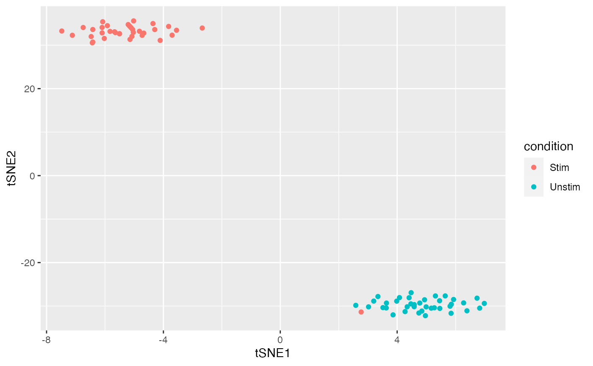
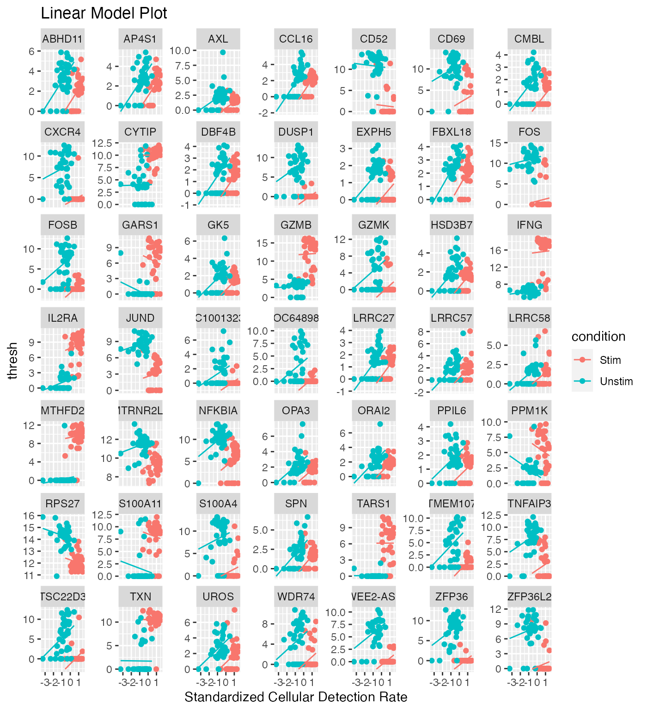
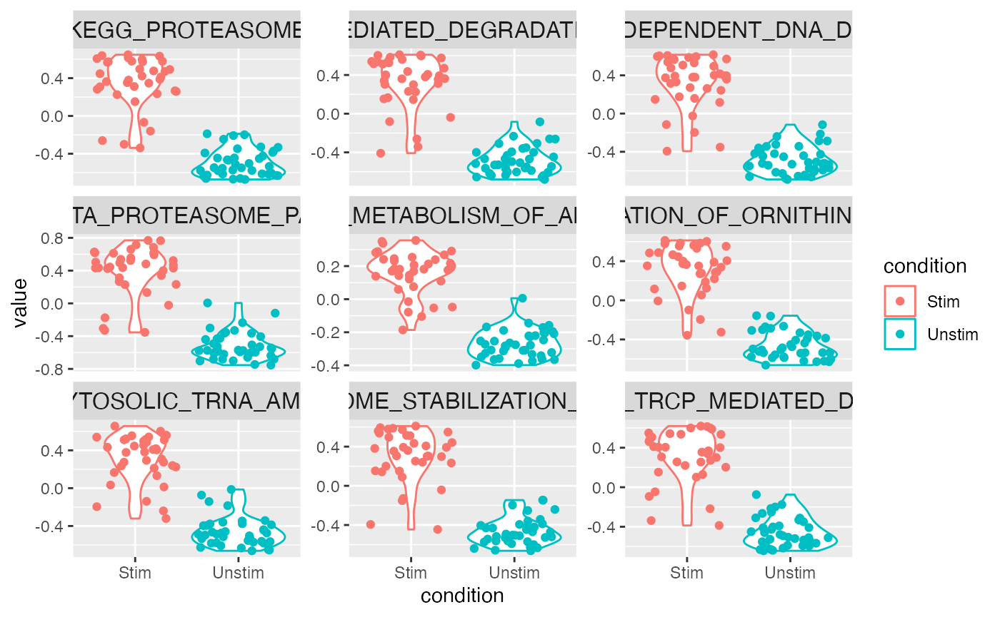
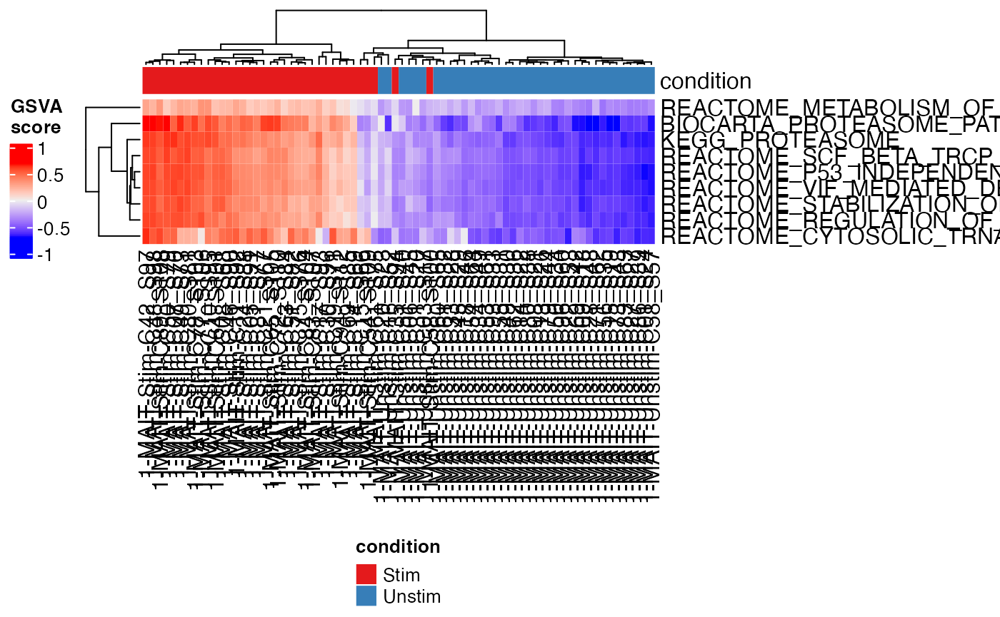

Processing and Visualizing Data in the Single Cell Toolkit
David Jenkins
The Section of Computational Biomedicine, Boston University School of Medicine, Boston, MAdfj@bu.edu
Tyler Faits
The Section of Computational Biomedicine, Boston University School of Medicine, Boston, MAW. Evan Johnson
The Section of Computational Biomedicine, Boston University School of Medicine, Boston, MAv02-Processing_and_Visualizing_Data_in_the_SingleCellTK.RmdIntroduction
The analysis modules available through the Shiny app are also available as R functions for standard R console processing of single cell RNA-Seq data using a SCtkExperiment object. At any stage, you can load the Shiny App to interactively visualize and analyze a data set, but this vignette will show a standard workflow run entirely through the R console.
MAITS Example
The MAST package contains a convenient scRNA-Seq example data set of 96 Mucosal Associated Invariant T cells (MAITs), half of which were stimulated with cytokines to induce a response. For more details, consult the MAST package and vignette.
We will first convert the MAST example dataset to a SCtkExperiment object.
suppressPackageStartupMessages({
library(MAST)
library(singleCellTK)
library(xtable)
})
data(maits, package="MAST")
maits_sce <- createSCE(assayFile = t(maits$expressionmat),
annotFile = maits$cdat,
featureFile = maits$fdat,
assayName = "logtpm",
inputDataFrames = TRUE,
createLogCounts = FALSE)
rm(maits)summarizeTable
You can get summary metrics with the summarizeTable function:
knitr::kable(summarizeTable(maits_sce, useAssay = "logtpm"))| Metric | Value |
|---|---|
| Number of Samples | 96 |
| Number of Genes | 16302 |
| Average number of reads per cell | 17867 |
| Average number of genes per cell | 6833 |
| Samples with <1700 detected genes | 5 |
| Genes with no expression across all samples | 0 |
Typically, these summary statistics would be run on a “counts” matrix, but here we have log(tpm) values so the average number of reads per cell is calculated from the normalized values instead of raw counts.
Filtering by Annotation
Explore the available annotations in the data:
colnames(colData(maits_sce))## [1] "wellKey" "condition" "nGeneOn"
## [4] "libSize" "PercentToHuman" "MedianCVCoverage"
## [7] "PCRDuplicate" "exonRate" "pastFastqc"
## [10] "ncells" "ngeneson" "cngeneson"
## [13] "TRAV1" "TRBV6" "TRBV4"
## [16] "TRBV20" "alpha" "beta"
## [19] "ac" "bc" "ourfilter"table(colData(maits_sce)$ourfilter)##
## FALSE TRUE
## 22 74The data has a filtered dataset with 74 ‘pass filter’ samples, let’s subset the data to include the pass filter samples
maits_subset <- maits_sce[, colData(maits_sce)$ourfilter]
table(colData(maits_subset)$ourfilter)##
## TRUE
## 74knitr::kable(summarizeTable(maits_subset, useAssay = "logtpm"))| Metric | Value |
|---|---|
| Number of Samples | 74 |
| Number of Genes | 16302 |
| Average number of reads per cell | 16292 |
| Average number of genes per cell | 7539 |
| Samples with <1700 detected genes | 0 |
| Genes with no expression across all samples | 157 |
Visualization
Initially, there are no reduced dimensionality datasets stored in the object
reducedDims(maits_subset)## List of length 0PCA and t-SNE can be added to the object with the getPCA() and getTSNE() functions:
maits_subset <- getPCA(maits_subset, useAssay = "logtpm",
reducedDimName = "PCA_logtpm")
maits_subset <- getTSNE(maits_subset, useAssay = "logtpm",
reducedDimName = "TSNE_logtpm")
reducedDims(maits_subset)## List of length 2
## names(2): PCA_logtpm TSNE_logtpmPCA
PCA data can be visualized with the plotPCA() function:
plotPCA(maits_subset, reducedDimName = "PCA_logtpm", colorBy = "condition")t-SNE
t-SNE data can be visualized with the plotTSNE() function:
plotTSNE(maits_subset, reducedDimName = "TSNE_logtpm", colorBy = "condition")
Converting Gene Names
The singleCellTK has the ability to convert gene ids to various formats using the org.*.eg.db Bioconductor annotation packages. These packages are not installed by default, so these must be manually installed before this function will work.
suppressPackageStartupMessages({
library(org.Hs.eg.db)
})
maits_entrez <- maits_subset
maits_subset <- convertGeneIDs(maits_subset, inSymbol = "ENTREZID",
outSymbol = "SYMBOL", database = "org.Hs.eg.db")
#to remove confusion for MAST about the gene name:
rowData(maits_subset)$primerid <- NULLDifferential Expression with MAST
MAST is a popular package for performing differential expression analysis on scRNA-Seq data that models the effect of dropouts using a bimodal distribution and by including the cellular detection rate into the differential expression model. Functions in the toolkit allow you to perform this analysis on a SCtkExperiemnt object.
Adaptive Thresholding
First, an adaptive threshold is calculated by binning genes with similar expression levels.
thresholds <- thresholdGenes(maits_subset, useAssay = "logtpm")
par(mfrow = c(5, 4))
plot(thresholds)
par(mfrow = c(1, 1))Run MAST
MAST analysis can be run with a single function
mast_results <- MAST(maits_subset, condition = "condition", useThresh = TRUE,
useAssay = "logtpm")The resulting significantly differentially expressed genes can be visualized using a violin plot, linear model, or heatmap:
MASTviolin(maits_subset, useAssay = "logtpm", fcHurdleSig = mast_results,
threshP = TRUE, condition = "condition")
MASTregression(maits_subset, useAssay = "logtpm", fcHurdleSig = mast_results,
threshP = TRUE, condition = "condition")
plotDiffEx(maits_subset, useAssay = "logtpm", condition = "condition",
geneList = mast_results$Gene[1:100], annotationColors = "auto",
displayRowLabels = FALSE, displayColumnLabels = FALSE)
Among the top differentially expressed genes was interferon gamma, a cytokine that is known to be produced in response to stimulation.
Pathway Activity with GSVA
The singleCellTK supports pathway activity analysis using the GSVA package. Currently, the toolkit supports performing this analysis on human datasets with entrez IDs. Data can be visualized as a violin plot or a heatmap.
gsvaRes <- gsvaSCE(maits_entrez, useAssay = "logtpm",
"MSigDB c2 (Human, Entrez ID only)",
c("KEGG_PROTEASOME",
"REACTOME_VIF_MEDIATED_DEGRADATION_OF_APOBEC3G",
"REACTOME_P53_INDEPENDENT_DNA_DAMAGE_RESPONSE",
"BIOCARTA_PROTEASOME_PATHWAY",
"REACTOME_METABOLISM_OF_AMINO_ACIDS",
"REACTOME_REGULATION_OF_ORNITHINE_DECARBOXYLASE",
"REACTOME_CYTOSOLIC_TRNA_AMINOACYLATION",
"REACTOME_STABILIZATION_OF_P53",
"REACTOME_SCF_BETA_TRCP_MEDIATED_DEGRADATION_OF_EMI1"),
parallel.sz=1)## Warning in .local(expr, gset.idx.list, ...): 157 genes with constant
## expression values throuhgout the samples.## Warning in .local(expr, gset.idx.list, ...): Since argument method!
## ="ssgsea", genes with constant expression values are discarded.## Estimating GSVA scores for 9 gene sets.
## Computing observed enrichment scores
## Estimating ECDFs with Gaussian kernels
## Using parallel with 1 cores
##
|
| | 0%
|
|======= | 11%
|
|============== | 22%
|
|====================== | 33%
|
|============================= | 44%
|
|==================================== | 56%
|
|=========================================== | 67%
|
|=================================================== | 78%
|
|========================================================== | 89%
|
|=================================================================| 100%set.seed(1234)
gsvaPlot(maits_subset, gsvaRes, "Violin", "condition")
gsvaPlot(maits_subset, gsvaRes, "Heatmap", "condition")
Among the top pathways that showed increased activity in the stimulated cells was KEGG_PROTEASOME, indicating proteasome related genes showed increased activity in the stimulated T cells. This pathway includes interferon gamma.
Batch Effects Example
It is possible to use ComBat within the Single Cell Toolkit. This support is experimental, since ComBat was not designed for scRNA-Seq. Here, we will load the bladderbatch example data into a SingleCellExperiment object.
library(bladderbatch)
data(bladderdata)
dat <- bladderEset
pheno <- pData(dat)
edata <- exprs(dat)
bladder_sctke <- createSCE(assayFile = edata,
annotFile = pheno,
assayName = "microarray",
inputDataFrames = TRUE,
createLogCounts = FALSE)The plotBatchVariance() function can be used to plot the percent variation explained by condition and batch across the dataset.
plotBatchVariance(bladder_sctke, useAssay="microarray",
batch="batch", condition = "cancer")
The ComBatSCE() function can then be used to correct for batch effects
assay(bladder_sctke, "combat") <- ComBatSCE(inSCE = bladder_sctke,
batch = "batch",
useAssay = "microarray",
covariates = "cancer")## Standardizing Data across genesAfter batch correction, a larger percentage of the explained variation can be explained by the condition
plotBatchVariance(bladder_sctke, useAssay="combat",
batch="batch", condition = "cancer")Session info
## R version 3.5.1 (2018-07-02)
## Platform: x86_64-apple-darwin15.6.0 (64-bit)
## Running under: macOS High Sierra 10.13.6
##
## Matrix products: default
## BLAS: /Library/Frameworks/R.framework/Versions/3.5/Resources/lib/libRblas.0.dylib
## LAPACK: /Library/Frameworks/R.framework/Versions/3.5/Resources/lib/libRlapack.dylib
##
## locale:
## [1] en_US.UTF-8/en_US.UTF-8/en_US.UTF-8/C/en_US.UTF-8/en_US.UTF-8
##
## attached base packages:
## [1] parallel stats4 stats graphics grDevices utils datasets
## [8] methods base
##
## other attached packages:
## [1] bladderbatch_1.18.0 GSEABase_1.42.0
## [3] graph_1.58.0 annotate_1.58.0
## [5] XML_3.98-1.16 org.Hs.eg.db_3.6.0
## [7] AnnotationDbi_1.42.1 xtable_1.8-2
## [9] singleCellTK_1.1.18 MAST_1.6.1
## [11] SingleCellExperiment_1.2.0 SummarizedExperiment_1.10.1
## [13] DelayedArray_0.6.5 BiocParallel_1.14.2
## [15] matrixStats_0.54.0 Biobase_2.40.0
## [17] GenomicRanges_1.32.6 GenomeInfoDb_1.16.0
## [19] IRanges_2.14.10 S4Vectors_0.18.3
## [21] BiocGenerics_0.26.0 BiocStyle_2.8.2
##
## loaded via a namespace (and not attached):
## [1] nlme_3.1-137 bitops_1.0-6 fs_1.2.5
## [4] GSVA_1.28.0 bit64_0.9-7 RColorBrewer_1.1-2
## [7] rprojroot_1.3-2 tools_3.5.1 backports_1.1.2
## [10] R6_2.2.2 mgcv_1.8-24 DBI_1.0.0
## [13] lazyeval_0.2.1 colorspace_1.3-2 GetoptLong_0.1.7
## [16] tidyselect_0.2.4 bit_1.1-14 compiler_3.5.1
## [19] xml2_1.2.0 desc_1.2.0 labeling_0.3
## [22] bookdown_0.7 scales_1.0.0 genefilter_1.62.0
## [25] pkgdown_1.1.0 commonmark_1.5 stringr_1.3.1
## [28] digest_0.6.15 rmarkdown_1.10 XVector_0.20.0
## [31] pkgconfig_2.0.2 htmltools_0.3.6 limma_3.36.2
## [34] highr_0.7 rlang_0.2.2 GlobalOptions_0.1.0
## [37] rstudioapi_0.7 RSQLite_2.1.1 shiny_1.1.0
## [40] shape_1.4.4 bindr_0.1.1 dplyr_0.7.6
## [43] RCurl_1.95-4.11 magrittr_1.5 GenomeInfoDbData_1.1.0
## [46] Matrix_1.2-14 Rcpp_0.12.18 munsell_0.5.0
## [49] abind_1.4-5 stringi_1.2.4 yaml_2.2.0
## [52] MASS_7.3-50 zlibbioc_1.26.0 Rtsne_0.13
## [55] plyr_1.8.4 grid_3.5.1 blob_1.1.1
## [58] promises_1.0.1 crayon_1.3.4 lattice_0.20-35
## [61] splines_3.5.1 circlize_0.4.4 knitr_1.20
## [64] ComplexHeatmap_1.18.1 pillar_1.3.0 rjson_0.2.20
## [67] geneplotter_1.58.0 reshape2_1.4.3 glue_1.3.0
## [70] evaluate_0.11 data.table_1.11.4 httpuv_1.4.5
## [73] gtable_0.2.0 purrr_0.2.5 assertthat_0.2.0
## [76] ggplot2_3.0.0 xfun_0.3 mime_0.5
## [79] GSVAdata_1.16.0 later_0.7.3 roxygen2_6.1.0
## [82] survival_2.42-6 tibble_1.4.2 shinythemes_1.1.1
## [85] memoise_1.1.0 bindrcpp_0.2.2 sva_3.28.0